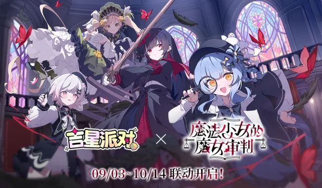

官方公告/211
魔法少女的魔女审判 发布ID：211 “欢迎来到吉星派对！” 《吉星派对》 X 《魔法少女的魔女审判》 联动活动将于2026年09月03日开启！ 【橘雪莉】&【远野汉娜】两位角色将作为联动限定角色登陆《吉星派对》！ ▇ 联动…
魔法少女的魔女审判 发布ID：211 “欢迎来到吉星派对！” 《吉星派对》 X 《魔法少女的魔女审判》 联动活动将于2026年09月03日开启！ 【橘雪莉】&【远野汉娜】两位角色将作为联动限定角色登陆《吉星派对》！ ▇ 联动内容 1.角色技能介绍 •橘雪莉 ￮PVP主动技能【怪力投掷】：将2格内的所有敌对角色扔向5格内的一个地块，随后对该地块的所有敌对角色造成2点伤害。 ￮PVP被动技能【侦探出击】：主动挑战敌方角色后，获得1层【推理时间】，最高叠加4层。 ￮PVE主动技能【怪力投掷】：将3格内的所有怪物扔向7格内的一个地块，随后对该地块的所有怪物造成2点伤害。 ￮PVE被动技能【侦探出击】：主动挑战怪物后，获得1层【推理时间】，最高叠加4层。 ￮PVE联动技能【挚友守护】：如果远野汉娜在橘雪莉4格内，使远野汉娜获得受到伤害-1。 ￮【推理时间】效果：每层使自身攻击力+1。回合结束时减少1层。 •远野汉娜 ￮PVP主动技能【飘浮魔法】：获得【飘浮】，持续1轮。 ￮PVP被动技能【幻想千金】：移动的最终点数大于等于6时，获得1星币。 ￮PVE主动技能【飘浮魔法】：获得【飘浮】，持续1轮。 ￮PVE被动技能【幻想千金】：移动的最终点数大于等于6时，获得1星币。 经过友方角色时，获得1星币和1层【人偶制作】。如果此时拥有【飘浮】且自身星币足够，向该友方角色转账3星币。 当【人偶制作】达到7层时，远野汉娜获得【人偶完成】：经过友方角色时，使该友方角色获得下次移动速度+2。 ￮PVE联动技能【挚友祝福】：经过橘雪莉时，使橘雪莉获得下次移动速度+2和1层【推理时间】。 ￮【飘浮】效果：移动速度+2，不会触发陷阱和路障。被其它单位经过时不会触发战斗。 •预告仅供参考，具体内容均以上线时为准。 2.上线活动 --- 魔法少女的魔女审判活动 --- 2026/09/03 ~ 2026/10/14 •玩家可从主界面进入联动活动，完成活动任务可免费获得： 头像-像素远野汉娜 × 1、 头像-像素橘雪莉 × 1、 卡牌-魔法少女的魔女审判 × 1、 抽奖券 × 10、 时装券 × 10、 鼠鼠筹码 × 500、 中级战斗宝典 × 10、 蓝色材料自选箱 × 10。 3.限时上架--- 联动角色礼包 --- 2026/09/03 ~ 2026/10/14 •玩家可从主界面进入联动活动，购买"限时联动角色礼包"可获得： 角色橘雪莉、 角色远野汉娜、 背景：魔法少女的魔女审判联动一期、 名片-魔法少女的魔女审判联动一期（动态）、 名片-橘雪莉、 名片-远野汉娜、 头像-橘雪莉鼠鼠、 头像-远野汉娜鼠鼠、 星盘 × 1200。 祝您游戏愉快，今后也请多多支持《吉星派对》。 《吉星派对》运营团队